The Last of Us é uma franquia de jogos eletrônicos de ação-aventura e survival horror, criada por Neil Druckmann. Atualmente TLOU ganhou uma adaptação em formato de série. A franquia é situada em um mundo pós-apocalíptico, com seres humanos hostis e criaturas canibais infectadas por uma mutação de um fungo.
 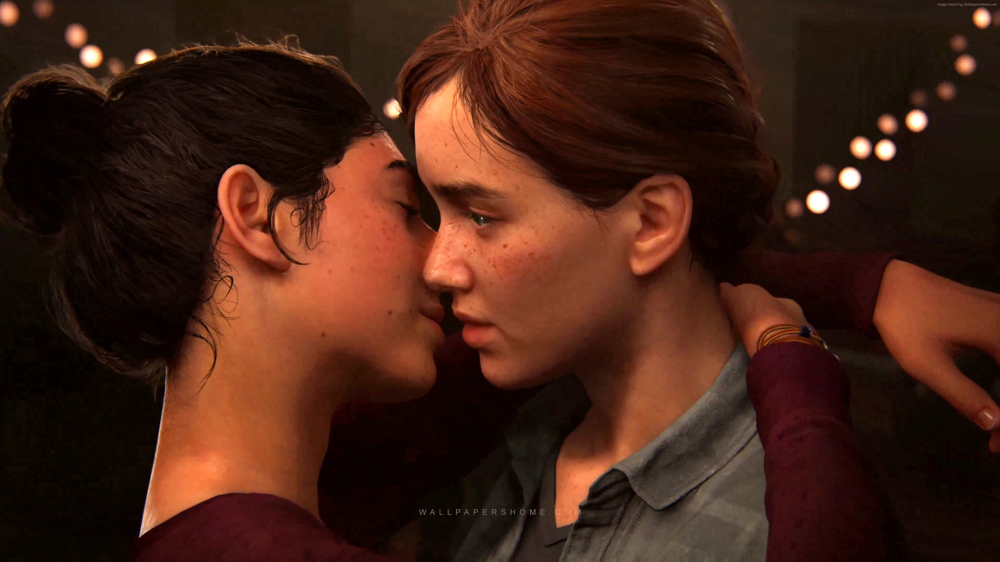
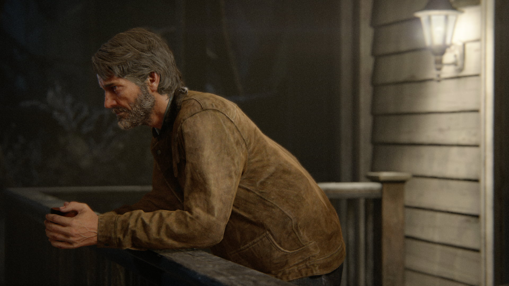
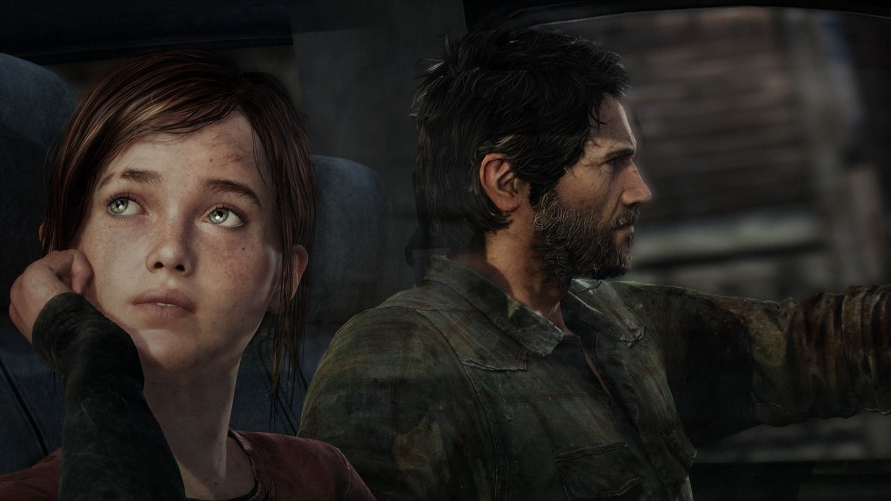
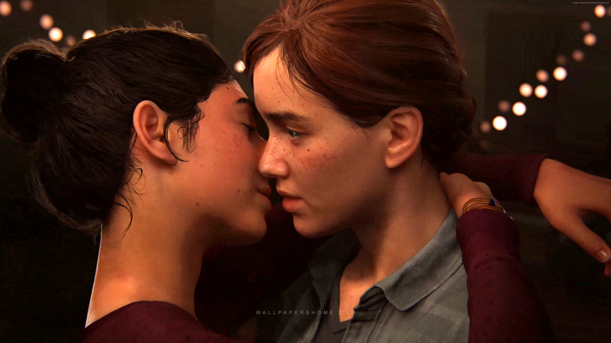
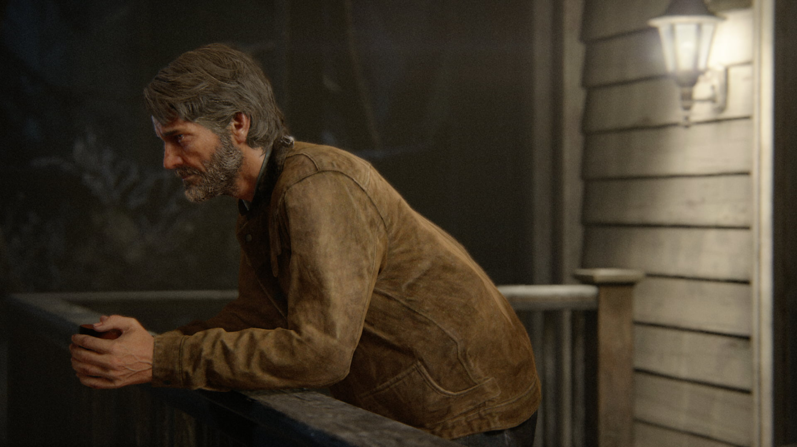
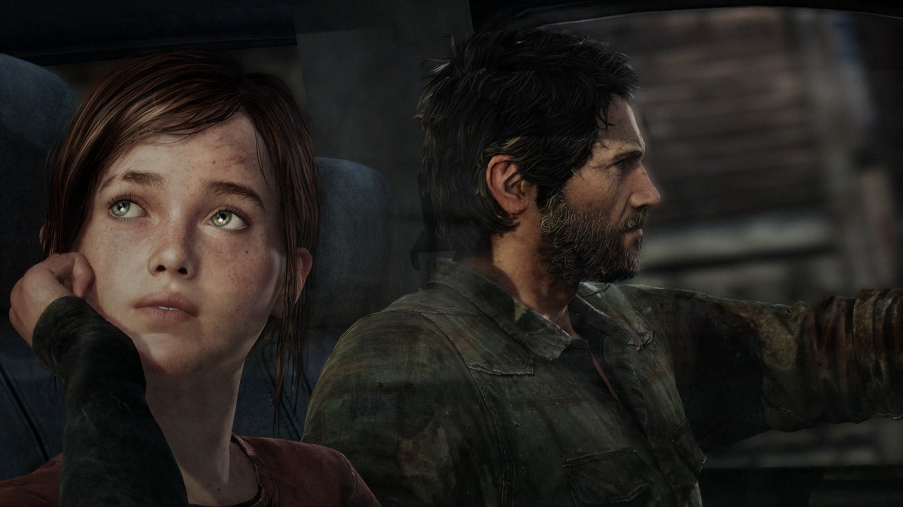
 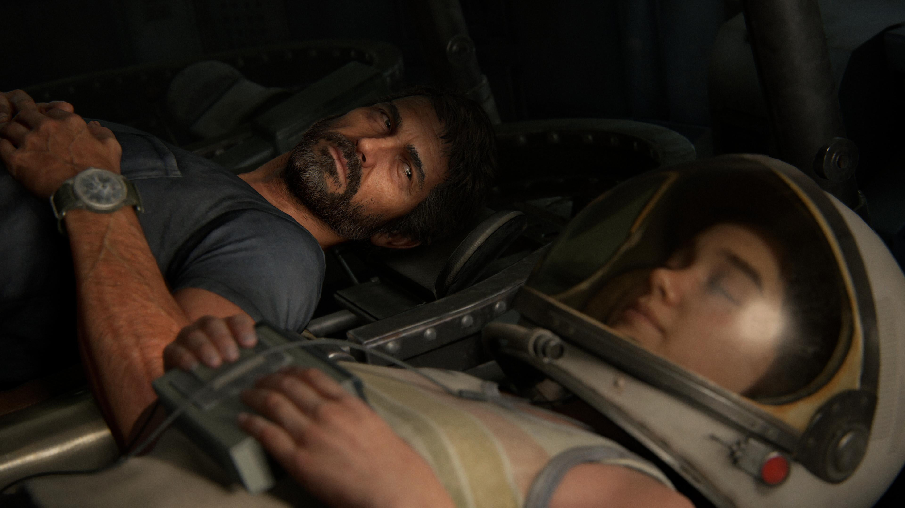
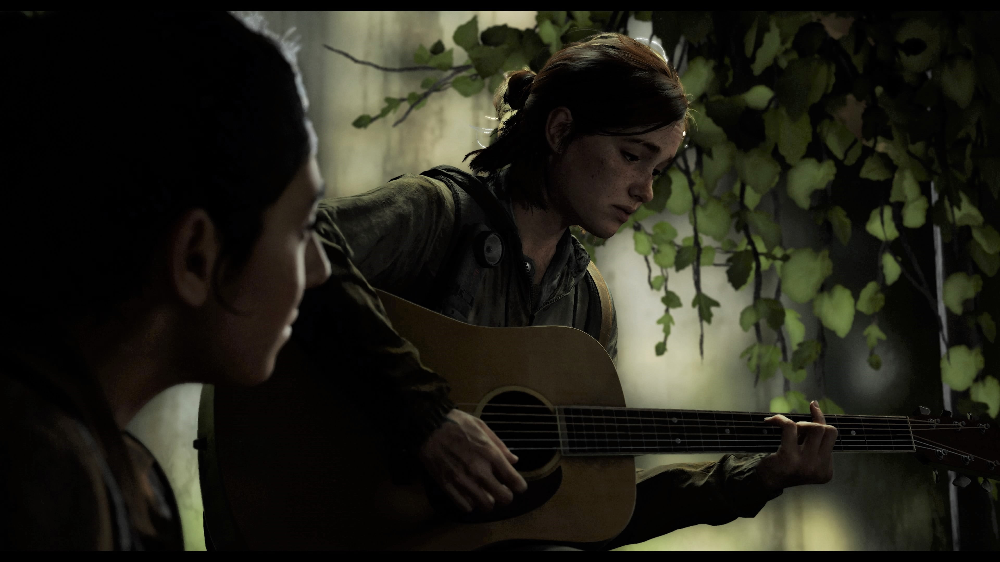
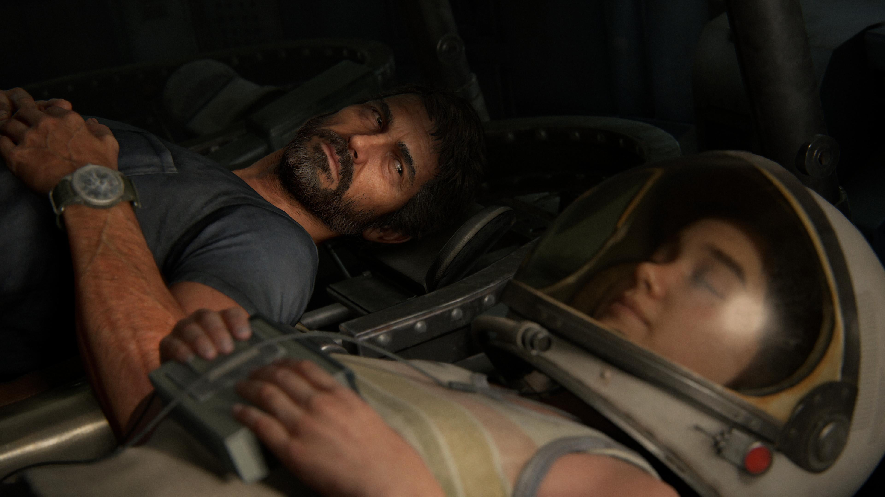
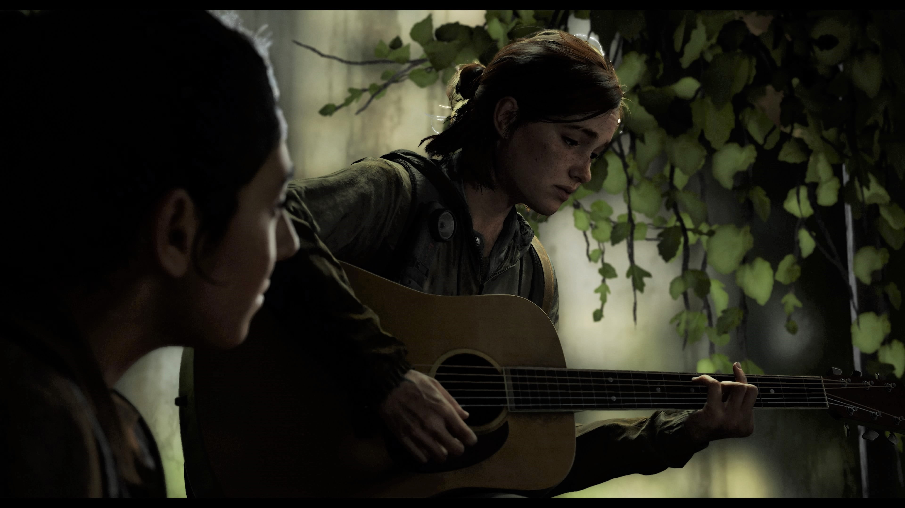
 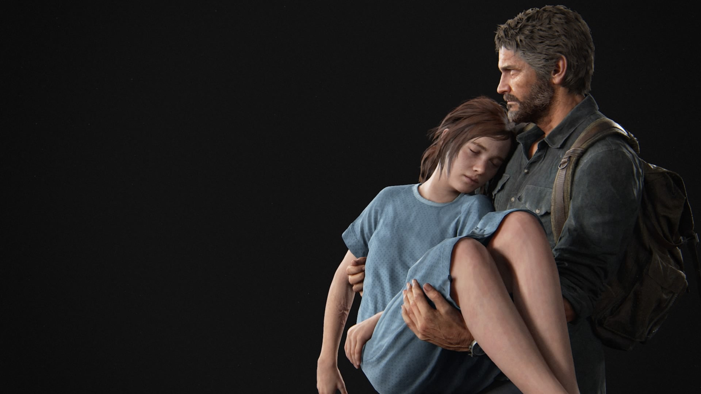
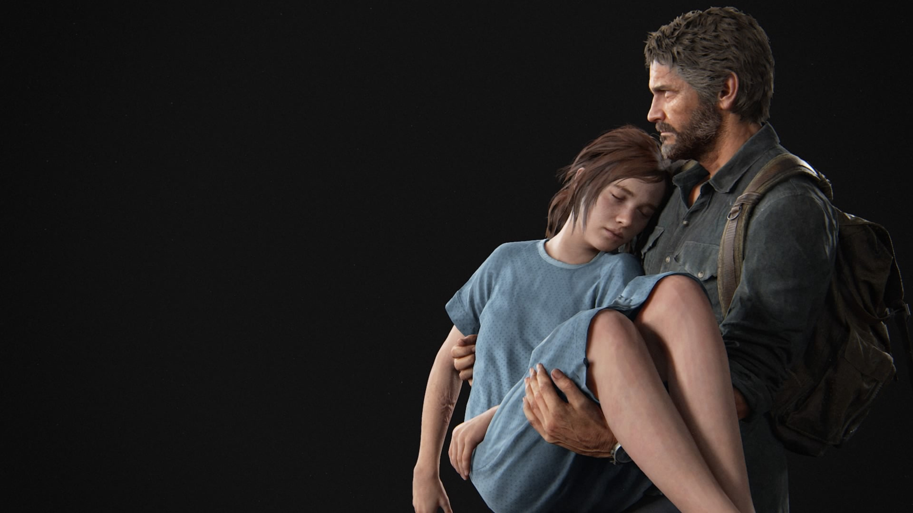


The Last of Us se passa 20 anos após um surto global de fungos que infectou a maior parte da população. A história nos conta a perigosa jornada de Joel e Ellie através dos Estados Unidos para encontrar uma comunidade segura, abordando durante essa jornada temas como amor, perda, superação e sobrevivência.
PURCHASE GAMEThe Last of Us Part II é o segundo jogo da franquia e se passa 5 anos após os eventos do primeiro. Dessa vez o jogo conta com duas protagonistas, Ellie que após um evento traumatico embarca em uma jornada cheia de reviravoltas, onde tem que lidar com temas complexos como raiva, culpa, perda e justiça, e Abby, uma soldada que apresenta uma história intensa e com reviravoltas, onde ela enfrenta desafios pessoais e é forçada a tomar decisões difíceis ao decorrer do desenvolvimento da trama.
PURCHASE GAMEThe Last of Us é uma série distópica da HBO baseada na franquia de jogos de videogame de mesmo nome criada por Neil Druckmann. O drama narra um futuro pandêmico que foi devastador para humanidade, deixando os seres humanos à beira da extinção. O vírus transforma pessoas em canibais e se espalha rapidamente com uma simples mordida. Algumas décadas depois, os poucos sobreviventes que restaram vivem viajando ou em quarentenas protegidas por oficiais do governo. Este é o cenário em que acompanhamos Joel (Pedro Pascal), um sobrevivente durão que é contratado para levar a jovem Ellie (Bella Ramsey) para fora da zona de quarentena opressiva onde vive. Os dois devem encontrar um grupo de rebeldes paramilitares que se rebelou contra as autoridades. Porém, eles descobrem no caminho que Ellie está possivelmente infectada com o vírus, apesar da jovem não apresentar os sintomas recorrentes da doença. Por conta disso, eles acreditam que a imunidade de Ellie pode ser a chave para encontrar a cura do vírus e potencialmente salvar a humanidade